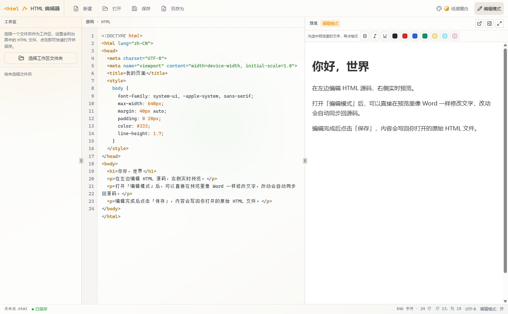

左侧编写 HTML 源码，右侧实时预览；开启编辑模式后，可直接在预览画布中像 Word 一样修改文字，改动自动同步回源码。

围绕源码编辑与实时预览打磨的桌面工作流
文件列表、源码编辑、实时预览并排展示，面板宽度可拖拽调整，窄屏自动纵向堆叠。
源码区行号与 HTML 高亮，透明输入层保留原生编辑手感，高亮延后渲染不阻塞输入。
所见即所得编辑，选中预览文字即可修改，输入节流批量回写源码，避免逐键重排卡顿。
加粗、斜体、下划线，多种文字颜色与高亮颜色，排版调整随手完成。
纸感暖白、暗夜、森林、海洋、石墨，界面布局与主题在本地记忆，重新打开保持原样。
支持打开本地 HTML 文件、保存与另存为；草稿本地自动保存，重新打开不丢失未提交内容。
提供安装版与便携版，按需选择